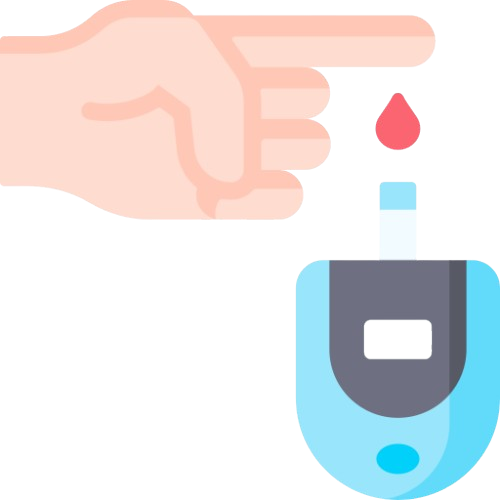

‹
Symptom Detector
Let’s continue with your medical factors…
Step 3/3
Medical Factors
Medical questions
Have you ever been told by a doctor that you have high blood pressure?
ℹ
*
Select options
Yes
No
Choose the option that corresponds to your blood pressure state.
Have you ever been told by a doctor that you have any kind of heart disease?
ℹ
*
Select options
Yes
No
Choose the option that corresponds to your heart disease history.

Have you measured your average blood glucose level?
ℹ
*
Select options
Yes – I know my average glucose level
No – I don’t know my average glucose level
mg/dL
Choose the option that corresponds to your glocose state (Yes/No). If "Yes", Please clarify the exact amount of your average glocose level in (mg/dL).
Back
Submit
×